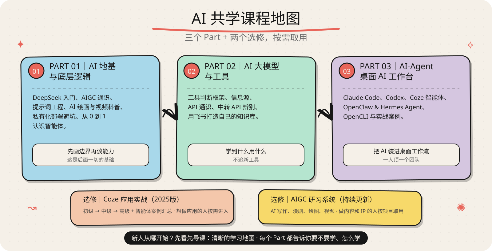

COURSE / 路径与成果
带着一项工作进来，带着一份成果出去。
七条路径是入口，三个 Part + 两个选修是地图。你不需要先把所有内容学完，只要从当前最重要的任务开始。
01 / 选择起点
七条路线，现在只选一条。
每条路线都写清：先处理什么、进入哪个模块、最后留下什么成果。
- 路径 01
AI 小白入门
先理解大模型、Token、上下文、提示词和 Agent 的基础关系。
成果：个人提示词模板 - 路径 02
从会问到会做
拆解任务、提供材料、迭代结果并完成一次工作交付。
成果：一份完整工作交付 - 路径 03
搭建 AI Agent
让 AI 读文件、使用工具，并稳定执行一项重复任务。
成果：个人任务助手 - 路径 04
内容创作
从选题、素材包、大纲到初稿、审校和分发。
成果：有素材依据的内容成稿 - 路径 05
职场提效
把 AI 用到总结、方案、表格、会议纪要和流程自动化中。
成果：可套用的职场任务模板 - 路径 06
AI 编程
理解项目目录、配置、代码、调试和 AI 编程协作。
成果：可运行的小项目 - 路径 07
AIGC 创作
把剧本、角色、分镜、图像、视频片段串成一个作品。
成果：可展示的作品片段
02 / 知识地图
三个 Part + 两个选修，按需取用。
它是一张地图，不是必须从头刷到尾的目录。先解决眼前的问题，再把能力扩展出去。

- 01AI 地基与底层逻辑DeepSeek、AIGC 通识、提示词工程与智能体入门。
- 02AI 大模型与工具工具判断、信息源、API 通识与飞书知识库。
- 03AI-Agent 桌面 AI 工作台Claude Code、Codex、Coze、Hermes Agent 与实战。
- 选修Coze 应用实战（2025版）初级 → 中级 → 高级，按需进入。
- 选修AIGC 研习系统写作、漫剧、绘图、视频，按项目取用。
- PART 01
AI 地基与底层逻辑
DeepSeek 入门、AIGC 通识、提示词工程、AI 绘画与视频科普、私有化部署避坑、从 0 到 1 认识智能体。
先画边界再谈能力 —— 这是后面一切的基础。 - PART 02
AI 大模型与工具
工具判断框架、信息源、API 通识、中转 API 辨别、用飞书打造自己的知识库。
学到什么用什么，不追新工具。 - PART 03
AI-Agent 桌面 AI 工作台
Claude Code、Codex、Coze 智能体、OpenClaw & Hermes Agent、OpenCLI 与实战案例。
把 AI 装进你的桌面工作流，一人顶一个团队。 - 选修
Coze 应用实战（2025版）
初级 → 中级 → 高级 + 智能体案例汇总。想做智能体应用的人按需进入。
- 选修
AIGC 研习系统（持续更新）
AI 写作、漫剧从 0 到 1、AI 绘图、爆款视频保姆级教程。做内容、做 IP 的人按项目取用。
新人从哪开始：先看“先导课：清晰的学习地图”，每个 Part 都有先导课告诉你“要不要学、怎么学”。
03 / 共学交付
不是领资料，是带着做。
从判断问题到复盘保存，把一次完成变成下一次可以继续的工作方法。
- 01
判断问题
先找卡点，不先堆工具。
- 02
进入路线
从七条路线选最短一条。
- 03
动手产出
带着材料，做出可交付结果。
- 04
复盘保存
写回模板、知识库或 Agent。
课程练习样例：把一堆会议记录整理成行动清单和跟进模板。示例用于解释方法，不代表学员案例或结果承诺。
报名之前先筛选
这门课不适合谁
如果你的目标不是“系统用上 AI”，这里可以先帮你节省一次报名。
- 想学 AI 编程找工作的
编程本身这门课不教，先跟我把 AI 这部分搞懂，再去学编程。
- 想做大模型微调、RAG 开发的
那是给技术团队准备的，跟 99% 的普通人没关系。
- 只想收藏教程、“学会”但不想“用”的
我的课是“用会”导向，边学边干。
如果你只是想系统用上 AI、把重复工作交给 AI，这门课就是为你写的。
04 / 报名与入口
先确认方向，再进入共学。
报名不是买一堆视频，而是拿到一套能持续使用的 AI 工作方法。
报名你将得到
- 飞书知识库全部课程权限，内容随 AI 发展动态更新
- 共学社群：创始人亲自答疑 + 学员交流，卡住别硬扛
- 三条 7 天路线：按你的目标选一条，不用从头刷完
- 工具判断框架、提示词模板、实战案例与资料包
常见问题
零基础能学吗？
能。路线 A 就是为小白设计的，先导课先讲“AI 能干啥、不能干啥”。
每天要花多久？
纯看 30–45 分钟，跟着实操 1–2 小时。
课程会过时吗？
讲的是底层逻辑不变的部分，工具层内容随更新动态跟进。
学不完怎么办？
不用学完。80% 的人只需要前两个模块 + Coze 初级，按路线取用即可。
不要求先留手机号，也不制造“名额紧张”。先判断入口是否适合你。
- 个人共学想用 AI 完成一项具体工作
- 企业试点先跑通一个岗位任务
- 先看内容先判断方法是否适合
STEP 2
推荐入口
个人微信
备注：AI共学
公众号
大象AI共学
可留言 · 回复时间以实际沟通为准